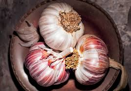
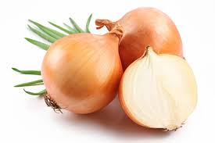
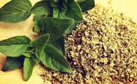

Para maiores informações efetue seu Login ou Cadastre-se
Temperos Naturais para um cardápio mais saudável
Temperos naturais são conhecidos por oferecem uma alternativa mais saudável ao excesso no uso de sal ou a formas de preparo prejudiciais à saúde - um refogado à base de ervas, por exemplo, pode ser bem mais saboroso do que uma fritura.
A Organização Mundial da Saúde (OMS) recomenda que o consumo de sal seja de até 5g por dia, porém os brasileiros estão consumindo o dobro da quantidade recomendada.
Algumas medidas devem ser adotadas para diminuir esse consumo, como diminuir o consumo de produtos industrializados e prontos para consumo, como nuggets, lasanhas congeladas e embutidos (salsicha, linguiça, presunto) e caldos prontos, e passar a utilizar mais temperos naturais.
Alguns Temperos Naturais
Alho

Alho é nutritivo, melhora a imunidade, a saúde óssea, entre outros benefícios. O alho é uma planta comestível pertencente ao gênero Allium, muito usado como tempero e para fins medicinais. Ele cresce em muitas partes do mundo e é um ingrediente popular na culinária devido ao seu cheiro forte e sabor delicioso.
Cebola

Difícil achar alguém que não utiliza a cebola na culinária. Ela é rica em vitaminas A e C e ajuda a aliviar problemas respiratórios. Ainda é um poderoso antioxidante e auxilia no controle do colesterol. Uma dica importante é evitar o cozimento excessivo deste tempero: embora seja versátil e saudável, perde grande parte de seus nutrientes se levado a altas temperaturas. O mesmo ocorre com o alho. Por isso, a dica é consumi-los crus ou levemente refogados ou cozidos.
Orégano

Importante para fortalecer o sistema imunológico, porque tem propriedades antioxidantes. É um condimento bem popular na Itália e um clássico nas pizzas e em diferentes tipos de molho. Mas o orégano também é um bom tempero para omeletes e tapiocas.